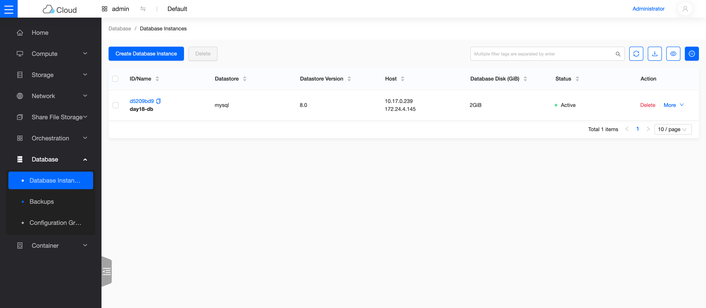
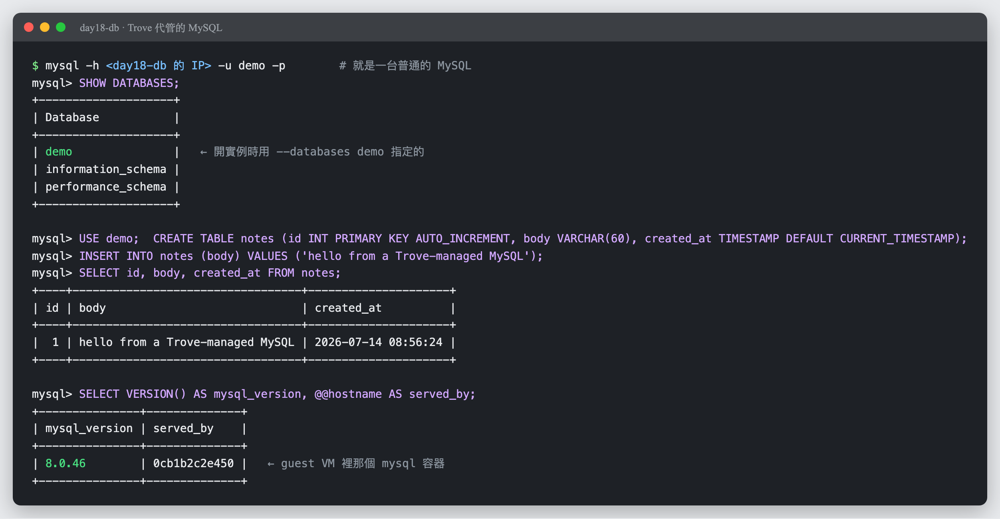

Day 18: Trove——代管資料庫服務¶
階段一的收官戰:資料庫即服務。今天結束時,你的雲能像 AWS RDS 一樣——使用者下一行指令,幾分鐘後拿到一台會自己照顧自己的 MySQL。本章有一顆幾乎人人會撞的雷,而且症狀非常具有誤導性——判讀方法會完整教給你。

你在課程的哪裡
- 今天:部署 Trove、準備 guest 映像檔、註冊 datastore、開出第一台代管 MySQL 並實際讀寫。
- 今天之後:階段一(服務擴充)完成;Day 19 起換腦袋——不再加新服務,改為拆解既有服務的內部。
第一次接觸 DBaaS?先讀這段¶
「在 VM 裡自己裝 MySQL」和「用 RDS」的差別,用過的人都懂:前者要自己管安裝、設定、備份、升版;後者下一張單,這些全是雲的事。Trove 就是 OpenStack 的 RDS。
它的現代架構值得先認識,因為這決定了今天的雷區分布:
flowchart TB
subgraph ctl["控制面(Kolla 容器)"]
direction LR
API["trove-api<br/>(收單)"] --> TM["trove-taskmanager<br/>(編排建立流程)"] ~~~ CD["trove-conductor<br/>(收 guest 回報)"]
end
TM ==>|"請 Nova 開一台 guest VM<br/>(用專屬映像檔)"| G
subgraph G["guest VM(使用者專屬)"]
direction LR
AGENT["trove-guestagent<br/>(住在 VM 裡的管家)"] --> DOCKER["Docker 容器:mysql:8.0<br/>(真正的資料庫)"]
end
AGENT -.->|"RabbitMQ 回報心跳與狀態"| CD兩個要點:
- 資料庫跑在 guest VM 內的 Docker 容器裡——guest 映像檔只含作業系統 + 管家(guest-agent)+ Docker;MySQL 版本由容器映像檔決定。這個設計讓「映像檔斷代」的古老風險大幅降低(這正是我們預先查證後把風險降級的原因:官方 guest 映像檔每天自動建置,資料庫容器另行每日更新)。
- guest-agent 要連得回控制面的 RabbitMQ——這是 Trove 部署最經典的卡點。好消息:在我們的網路架構下,它自然就通(原理見下)。
原理與架構:guest 怎麼連回家¶
官方文件教你為 Trove 建一條專用管理網路。但回想 Day 8:K8s 節點(tenant 網的 VM)一直都連得到 10.0.0.4 的 Keystone 與 RabbitMQ——路徑是 tenant 網 → router SNAT → 主機。Trove 的 guest 走同一條路即可,一個管理網路都不用建:
flowchart TB
A["guest VM(10.17.0.x,day17-net)"] ==>|"router SNAT(Day 2 的老朋友)"| B["主機 10.0.0.4"]
B ==> C["RabbitMQ :5672(host network)"]這就是本課程「極簡路徑優先」的原則:先走已驗證的路,不夠再加料。生產環境基於隔離與安全,仍應建立專用管理網——但理解了上面這條路,再讀官方的管理網設計就只是加一層而已。
步驟¶
步驟 1:部署 Trove(就一行 flag)¶
echo 'enable_trove: "yes"' | sudo tee -a /etc/kolla/globals.yml
source ~/kolla-venv/bin/activate
kolla-ansible deploy -i ~/all-in-one --tags trove
三個容器(api/taskmanager/conductor)healthy 即可續行。
步驟 2:準備 guest 映像檔¶
官方每天自動建置 guest 映像檔(1.4 GB),下載、上傳 Glance、打上 Trove 用來找映像檔的 tag:
curl -L -o ~/trove-guest-noble.qcow2 \
https://tarballs.opendev.org/openstack/trove/images/trove-master-guest-ubuntu-noble.qcow2
source /etc/kolla/admin-openrc.sh
openstack image create trove-guest-ubuntu-noble \
--file ~/trove-guest-noble.qcow2 --disk-format qcow2 --container-format bare \
--tag trove --tag mysql
步驟 3:註冊 datastore¶
告訴 Trove:「有一種叫 mysql 8.0 的資料庫,guest 映像檔用 tag 找,容器用 8.0 這個版本標籤拉」:
pip install python-troveclient # CLI 外掛,同型雷第 N 次
openstack datastore version create 8.0 mysql mysql "" \
--image-tags trove,mysql --active --default --version-number 8.0
openstack datastore version list mysql
步驟 4:建立資料庫實例¶
網路沿用 Day 17 建立的 day17-net。動手前先確認 subnet 設有 DNS nameserver——guest 開機時要從網路拉取資料庫容器,沒有 DNS 必定失敗(完整的症狀判讀見地雷 1):
NET=$(openstack network show day17-net -f value -c id)
openstack database instance create day18-db \
--flavor m1.medium --size 2 --nic net-id=$NET \
--datastore mysql --datastore-version 8.0 \
--databases demo --users demo:<你的密碼>
watch openstack database instance show day18-db -c status -c operating_status
背後發生的事:Nova 開 guest VM(掛一顆 2G 的 Cinder volume 當資料碟)→ guest-agent 開機自啟、連回 RabbitMQ → 從網路拉 mysql:8.0 容器 → 啟動並初始化你指定的資料庫與使用者。本課環境全程約 2.5 分鐘,終態:
步驟 5:驗證它是一台真的資料庫¶
讀路徑(這些查詢會經 API → RabbitMQ → guest-agent → MySQL 全鏈):
寫路徑(叫管家真的動手):
openstack database user create day18-db u2 <密碼>
openstack database db create day18-db demo2
openstack database db list day18-db # demo、demo2 都在
寫得進去 = guest 裡的 MySQL 真實運作中。
Skyline 的「Database」頁把這台代管實例列得跟 RDS 主控台一樣:datastore、版本、配發到的位址、磁碟大小、狀態一欄到位——使用者不需要知道底下是一台 Nova VM:

而從使用者的角度,這就是一台普通的 MySQL:拿任何 MySQL client 連上去,SQL 照打——建表、寫入、查詢,跟你平常用的資料庫沒有兩樣:

最後一行的 served_by 洩了底:真正回答你的是 guest VM 裡那個 mysql 容器(--datastore mysql 拉下來的那個)。但這是實作細節——使用者只看到一台 MySQL,這正是 DBaaS 的意義。
驗收 checkpoint¶
逐項驗證,全部符合判準才算完成今天:
| 驗證 | 判準 | 本課環境的結果 |
|---|---|---|
| 控制面 | api / taskmanager / conductor healthy | 符合 |
| 映像檔 | 官方每日版上傳 + tag,datastore 註冊 default | mysql 8.0 |
| 實例 | ACTIVE + HEALTHY |
BUILD→HEALTHY 約 2.5 分 |
| 讀路徑 | db list / user list 走全鏈成功 | 符合 |
| 寫路徑 | 新建 user 與 db 生效 | u2 / demo2 到位 |
| 備份 | 見地雷 4(本課程留為開放項) | △ |
地雷記錄¶
地雷 1:subnet 沒 DNS——「有心跳但起不來」的元兇¶
症狀:第一次建立在約兩分鐘後轉 ERROR,fault 訊息 Service not active, status: failed to spawn。
判讀關鍵:「failed to spawn」是 guest-agent 自己回報的——agent 能回報 = RabbitMQ 路是通的,死因在 guest 內部。
根因:當時 subnet 沒設 DNS nameserver。agent 連 RabbitMQ 用 IP(不需要 DNS)所以活著;但 guest 內 docker pull mysql 要解析網域名——沒有 DNS,拉不到容器,spawn 失敗。
解法:openstack subnet set day17-sub --dns-nameserver 8.8.8.8,重建實例,一次過。
金句:「agent 有心跳但 spawn 失敗 → 先查 subnet 有沒有 DNS。」 兩個症狀的組合直接指向根因,不用進 guest 就能判案。
地雷 2:失敗清理會滅證¶
Trove 對建立失敗的實例會自動刪除 guest VM——連 console log 一起帶走。發現 ERROR 時,openstack console log show 要趁早;晚了就只剩 taskmanager 的 log 可查(/var/log/kolla/trove/)。
地雷 3:backup 指令的新版語法¶
新版 troveclient 的備份指令是 openstack database backup create --instance <實例> <備份名>——舊教學裡「實例當第一個位置參數」的寫法會直接吐 usage。
地雷 4:備份的最後一哩(開放項)¶
備份功能會把資料上傳到 object-store(正是 Day 15 的 RGW,依賴鏈設計如此)。實測:備份任務成功派送(storage_driver: swift 正確),但 guest 內拉取備份工具容器時卡住——修法已知:在 /etc/kolla/config/trove/trove-guestagent.conf 覆寫備份容器來源後重部。本章先如實記錄現象與修法方向;完整步驟驗證後會補進本頁。
階段一完成 🎉¶
六天、六塊積木:Skyline、Ceph、RGW、Manila、Designate、Trove——首頁那張「還沒拼上的積木」表,一半已經拼上了。更重要的是方法論的複利:同型雷第 N 次出現時,你已經能在錯誤出現之前說出答案(CLI 外掛、行首錨定、subnet DNS)。
延伸閱讀¶
想往下深挖,從這幾份開始:
- Trove 生產環境部署指南 —— 官方的管理網設計;本章「極簡路徑」的正式版對照組。
- Trove guest image 建置指南 —— 自建映像檔(本章 Plan B)的官方流程與
trovestack用法。 - 官方 guest image 出貨處 —— 每日自動建置的映像檔就放在這;本章步驟 2 下載的來源。
- Trove User Guide —— 實例、備份、設定群組的使用者操作大全。
下一步¶
Day 19 起進入階段二:不再加新東西,改為拆開你已經用了三個星期的東西——一個 API 請求從 token 到 qemu 的完整生命週期。(內容隨 Sprint 4 進度陸續上線)